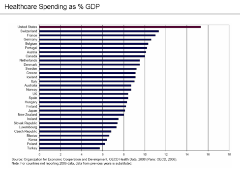

Sistema sanitario italiano
Il sistema sanitario italiano fornisce un servizio praticamente gratuito e, soprattutto, a tutti i cittadini - al massimo c'è da pagare un eventuale ticket. Ci sono ospedali pubblici ovunque, ma c'è ovviamente chi protende verso il privato, probabilmente per un servizio più veloce e, a volte, più economico di quello del ticket. Magari la tecnologia non sarà all'avanguardia, ma possiamo vantare un sistema sanitario aperto a tutti dove, in caso di malattia, non dobbiamo avere dubbi e perplessità riguardo alle cure. "La Repubblica tutela la salute come fondamentale diritto dell'individuo e interesse della collettività,
e garantisce cure gratuite agli indigenti.
"La Repubblica tutela la salute come fondamentale diritto dell'individuo e interesse della collettività,
e garantisce cure gratuite agli indigenti.Nessuno può essere obbligato a un determinato trattamento sanitario se non per disposizione di legge. La legge non può in nessun caso violare i limiti imposti dal rispetto della persona umana".
Come recita l'articolo 32 della nostra costituzione, gli italiani hanno accesso garantito al servizio sanitario nazionale (SSN) aventi l'assicurazione o meno.
Sistema sanitario europeo
I sistemi sanitari negli stati europei sono più o meno accessibili come quello italiano, ovviamente il prezzo da pagare per le cure può variare in base alle tasse che si pagano per il mantenimento del servizio.Ci sono stati come la Francia, per esempio, che rimborsano una parte della quota da versare per la sanità, mentre la restante viene pagata da un ente terzo, che può essere una mutua sanitaria - paragonabile ad una nostra assicurazione - o la cosiddetta "CMU-C", cioè la "Copertura malattia universale complementare", la quale rimborsa la restante quota da pagare se il cittadino francese non ha un reddito annuo che supera i 9.654 euro.
Grazie a ciò, i francesi, come molti altri stati europei, possono vantare un sistema sanitario efficiente e accessibile a tutti.
Sistema sanitario americano
 Il sistema sanitario americano, invece, non può vantare lo stesso sistema degli europei: gli Stati Uniti d'America sono una delle poche nazioni industrializzate e non avere una copertura sanitaria universale, ma col tempo stanno venendo promosse varie iniziative e leggi che riformano il sistema - si spera - fino a quando non verrà reso accessibile a tutti, indipendentemente dal reddito o dall'occupazione.Un esempio è la riforma del 2010, "Obamacare", in cui il presidente Barack Obama stipulò dei cambiamenti che miravano ad aumentare il numero di persone tutelate dal sistema sanitario e la diminuzione dei costi della sanità. I cambiamenti più effettivi sono il divieto per le compagnie di assicurazione di negare la stipula di assicurazioni e l'assistenza per determinate patologie e/o condizioni di salute, e gli incentivi fiscali che dovrebbero aiutare i cittadini a procurarsi un'assicurazione
Sistema sanitario ideato da me
Analizzando alcuni dei sistemi sanitari trattati, vi introduco di un sistema sanitario ideale che potrebbe essere - secondo il mio modesto parere - il sistema sanitario più efficiente e accessibile sotto tutti i fronti, sia da parte dello Stato, sia da parte dei cittadini:-
Pagato da tutti
Guardando anche all'effettivo peso economico che graverebbe sulle "spalle" dello Stato penso che sarebbe una buona idea avere un sistema sanitario mantenuto dalle tasse che paghiamo - un po' come succede qui in Italia, ma esteso in tutti gli stati - in modo tale da pagare tutti una modica somma per poter usufruire di questo servizio. -
Tecnologicamente all'avanguardia
C'è da dire che il sistema sanitario dovrebbe essere sì gratuito o comunque accessibile alla maggior parte della popolazione, ma bisogna poter usufruire di un servizio all' altezza, per parlare di un sistema sanitario efficiente.
Probabilmente, l'idea migliore sarebbe che lo Stato stanziasse una certa somma di denaro ogni anno allo sviluppo della sanità, in modo tale da mantenere i servizi sanitari all'avanguardia per offrire delle cure ottimali. -
Senza il rallentamento della burocrazia
Quante volte ci è capitato di dover andare a prenotare una visita anche solo di controllo e dover aspettare mesi interi per averla?
Sarebbe, quindi, cosa buona e giusta eliminare tutta questa burocrazia dalla sanità, o perlomeno ridurla al minimo, così da non dover aspettare tutto questo tempo per ricevere soltanto una visita di controllo.